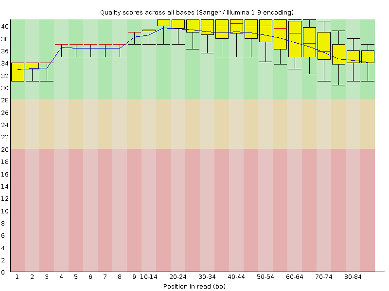
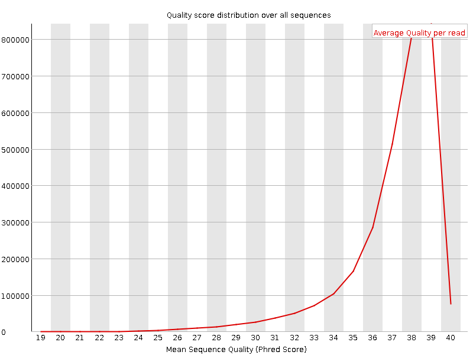
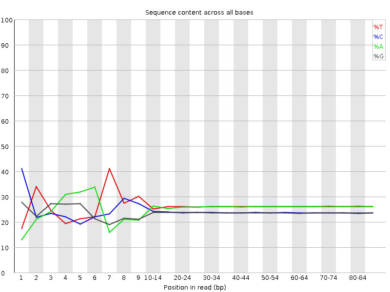
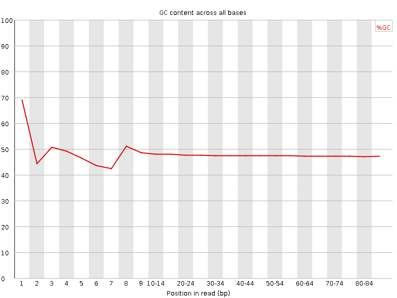
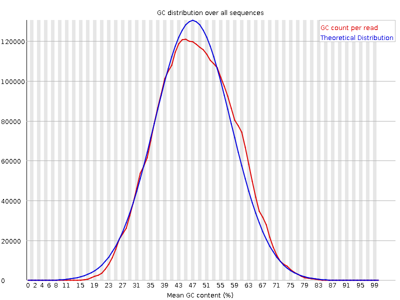
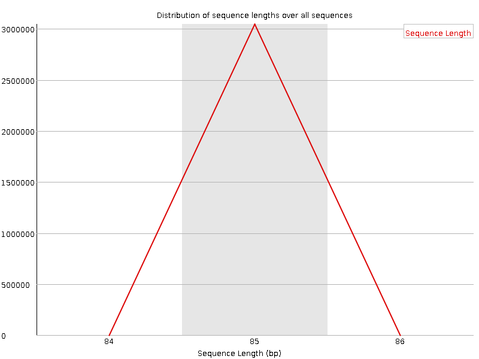
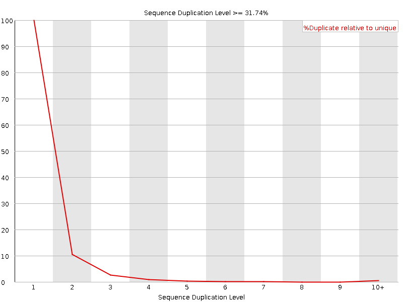
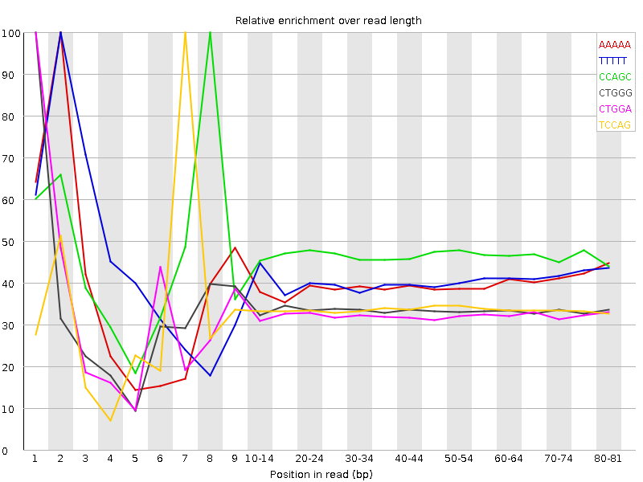

![[OK]](Icons/tick.png) Basic Statistics
Basic Statistics
| Measure | Value |
|---|---|
| Filename | c786-O.18_1.f.fastq |
| File type | Conventional base calls |
| Encoding | Sanger / Illumina 1.9 |
| Total Sequences | 3045888 |
| Filtered Sequences | 0 |
| Sequence length | 85 |
| %GC | 47 |
Per base sequence quality

Per sequence quality scores

![[FAIL]](Icons/error.png) Per base sequence content
Per base sequence content

Per base GC content

Per sequence GC content

Per base N content

Sequence Length Distribution

![[WARN]](Icons/warning.png) Sequence Duplication Levels
Sequence Duplication Levels

Overrepresented sequences
No overrepresented sequences
Kmer Content

| Sequence | Count | Obs/Exp Overall | Obs/Exp Max | Max Obs/Exp Position |
|---|---|---|---|---|
| AAAAA | 795710 | 2.7527335 | 6.953583 | 2 |
| TTTTT | 757620 | 2.4789002 | 6.002897 | 2 |
| CCAGC | 505220 | 2.382327 | 5.093295 | 8 |
| CTGGG | 475530 | 2.268841 | 6.7438293 | 1 |
| CTGGA | 511935 | 2.2412145 | 6.8777037 | 1 |
| TCCAG | 506445 | 2.1919372 | 6.5049176 | 7 |
| CTTCA | 540355 | 2.1221554 | 5.110504 | 1 |
| CTCCA | 490100 | 2.0970447 | 5.5695987 | 6 |
| CTGGC | 411325 | 1.9401639 | 5.152159 | 1 |
| CAGAA | 476430 | 1.9353102 | 5.002913 | 1 |
| GAAAA | 508175 | 1.9159323 | 5.0251584 | 1 |
| AAAAT | 558340 | 1.9101512 | 5.5269823 | 3 |
| CTCAG | 409190 | 1.7710093 | 5.0938535 | 1 |
| GGAAA | 407775 | 1.675502 | 5.10213 | 1 |
| CTTTG | 423610 | 1.6641662 | 5.064332 | 1 |
| CTTGG | 377140 | 1.6327922 | 5.1550236 | 1 |
| ATCCA | 312565 | 1.2413055 | 5.2369413 | 6 |